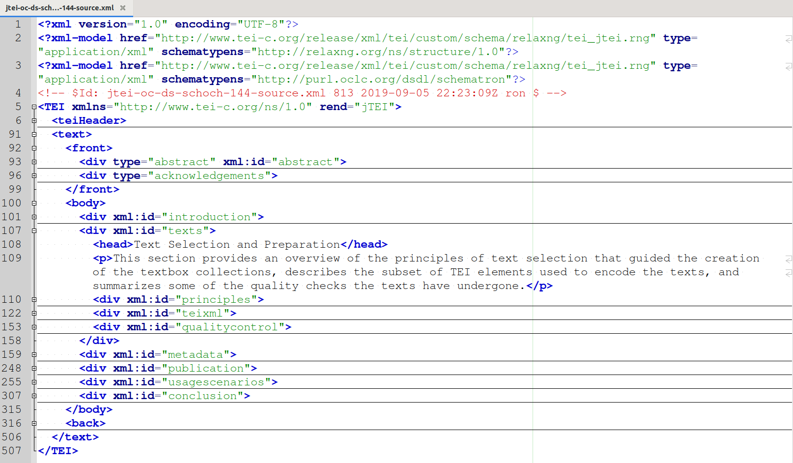

<!doctype html>
<html lang="en">
<head>
<meta charset="utf-8">
<!-- CUSTOMIZE THIS! -->
<title>Offene Publikationsformate</title>
<meta name="author" content="Christof Schöch">
<!-- END -->
<meta name="description" content="Slides">
<meta name="apple-mobile-web-app-capable" content="yes">
<meta name="apple-mobile-web-app-status-bar-style" content="black-translucent">
<meta name="viewport" content="width=device-width, initial-scale=1.0, maximum-scale=1.0, user-scalable=no, minimal-ui">
<link rel="stylesheet" href="css/reveal.css">
<link rel="stylesheet" href="css/theme/simple.css" id="theme">
<!-- Code syntax highlighting -->
<link rel="stylesheet" href="lib/css/zenburn.css">
<!-- Printing and PDF exports -->
<script>
var link = document.createElement( 'link' );
link.rel = 'stylesheet';
link.type = 'text/css';
link.href = window.location.search.match( /print-pdf/gi ) ? 'css/print/pdf.css' : 'css/print/paper.css';
document.getElementsByTagName( 'head' )[0].appendChild( link );
</script>
<!--[if lt IE 9]>
<script src="lib/js/html5shiv.js"></script>
<![endif]-->
</head>

<body>
<div class="reveal">
<div class="slides">
<section data-markdown="" data-separator="^\n-\n" data-separator-vertical="^\n--\n" data-separator-notes="^::" data-charset="utf-8" data-background-image="img/basics/uni-trier-icon.png" data-background-size="50px" data-background-position="top 10px right 10px">
<script type="text/template">

<!-- THIS IS WHERE THE CONTENT GOES! -->
<!-- Any section element inside of this container is displayed as a slide -->

##Offene Publiationsformate für Open Science
<hr/>
<br/>
Prof. Dr. Christof Schöch (Trier)
<br/>
<br/>***Open Access Tage 2020***
<br/>**15.-17.9.2020, Bielefeld**
<br/>
<br/>Folien: https://mimotext.github.io/oam/#/
<br/>
<br/>
<hr/>
</img>&nbsp;&nbsp;&nbsp;</img>


-
# Einleitung

--
## Ziele / Aufbau
1. Meine Motivation für "offene (und expressive) Formate" <!-- .element: class="fragment" data-fragment-index="1" --> 
1. Informationen und ihre Repräsentation <!-- .element: class="fragment" data-fragment-index="2" --> 


-
# Motivation

--
## Projekt MiMoText


::
- Drei Informationsquellen: Bibliographie (Bibliographie du genre romanesque francais); Sekundärliteratur (Literaturgeschichten); Primärliteratur (Volltexte der Romane) 
- Ziel: Informationen extrahieren, als LOD modellieren und zusammenführen

--
## Informationsnetzwerk


::
- Hier: Informationen aus der Bibliographie (RDF, siehe Lüscho) und aus den Romanen (Topic Modeling auf 70 Romanen)
- Warum Motivation: weil es frustrierend ist, dass wir so viel Forschungsliteratur haben, aber das enthaltene Wissen so mühsam zu extrahieren ist: (a) Digitalisierung, (b) open Access, (c) strukturierte Informationen

--
## Drei Desiderate
* Mehr Digitalisierung älterer Fachliteratur
* Mehr Daten im Open Access verfügbar (UrhG!)
* Mehr strukturierte Informationen

::
- Daraus doppelte Perspektive: 
- (1) Wie können wir ältere Literatur auswerten / aufbereiten?
- (2) Wie können wir Publikationen so verbessern, dass das in Zukunft einfacher wird? 


-
# Open Access für die Maschinen


--
## Jenseits des PDF
* PDF
  * digitale Kopie des gedruckten Buchs
  * Rezeptionsformat 
* Als Referenz- oder Archivformat sind sie ungeeignet
* Frage: Informationen und Formate?

::
- Sehr viele Informationen sind in anderen Formaten besser aufgehoben
- Nicht nur als separate Metadaten, sondern von Anfang den Text so denken
- Kontext "single-source publishing"

--
## Welche Informationen?
1. Bibliografische Angaben <!-- .element: class="fragment" data-fragment-index="1" --> 
1. Textstruktur <!-- .element: class="fragment" data-fragment-index="2" --> 
1. Entitäten (Personen, Orte, Konzepte, Gegenstände) <!-- .element: class="fragment" data-fragment-index="3" --> 
1. Textinhalt (Schlagworte, Kernaussagen) <!-- .element: class="fragment" data-fragment-index="4" --> 

--
## (1) Bibliografische Angaben
* Wo stehen wir? 
  * Plattformen wie CiteSeerX machen Zitationsdaten verfügbar
  * Müssen Sie crawlen und (meist) strukturieren
* Wo sollten wir hinkommen?
  * Jeder Artikel liefert Referenzen in strukturierter Form mit 
  * Eingebettet in XML (TEI/JATS) oder als BibTeX/BibJSON-Supplement

::
- Siehe auch: Initiativen wie OpenAIRE Research Graph, die Forschungsoutput modellieren, allerdings auch ohne die eigentlichen Inhalte zu berücksichtigen.)

--
## (2) Textstruktur
* Wo stehen wir? <!-- .element: class="fragment" data-fragment-index="1" --> 
  * Nur wenige Plattformen bieten XML an (OpenEdition, OLH, DHQ, ZfdG)
* Wo sollten wir hinkommen? <!-- .element: class="fragment" data-fragment-index="2" --> 
  * Zeitschriften bieten grundsätzlich XML (und EPUB, PDF) an
  * Kodieren grundsätzlich Makrostruktur und Mikrostruktur

::
- Makrostruktur: bspw. Abstract vs. Haupttext
- Mikrostruktur: bspw. Zitate innerhalb des Haupttextes

--
## Ein Artikel in XML-TEI
<br/><a href="data/jtei-oc-ds-schoch-144-source.xml"></a>

--
## (3) Entitäten mit Normdaten
* Wo stehen wir? <!-- .element: class="fragment" data-fragment-index="1" --> 
    * Entitäten vereinzelt als Schlagworte
    * Teilweise indirekt und unstrukturiert via Register / Index
    * Ansonsten meist nur Volltextsuche
* Wo müssten wir hinkommen? <!-- .element: class="fragment" data-fragment-index="2" --> 
    * Entitäten werden im Text markiert und identifiziert
    * Normdatenquellen: GND, VIAF, Wikidata, Geonames, etc.

::
- Entitäten: Persone, Orte, Organisationen, Forschungsgegenstände
- Bspw. Forschungsgegenstände: Romane, Gemälde, Ereignisse, Proteine uvm.
- In XML wäre das problemlos möglich: `<entity>` @type und @ref


--
## (4) Maschinenlesbarer Inhalt (LOD)
* Wo stehen wir? <!-- .element: class="fragment" data-fragment-index="1" --> 
  * Abtracts und Schlagworte (= unstrukturiert)
  * Vorschlag "semantic abstracts" von Shutton 199X
  * Seither wenig sichtbarer Fortschritt
* Wo müssten wir hinkommen?<!-- .element: class="fragment" data-fragment-index="2" --> 
  * Thesen, Beobachtungen und Ergebnisse als LOD-Statements  
  * Hindernisse: Mangel an Vokabularen und Ontologien für diverse Fachgebiete
  * Hindernisse: Aufwand für die Formulierung der Statements
  * Lösungsansatz: 
  * Taxonomy Learning, vgl. Wang et al. 2017)
  * Information Extraction

::
- Taxonomy Learning: Auch für die Zuordnung von Wörtern zu Hypernymen und dann zu Normdaten

--
## Linked Open Data

<small>

ISBN:9780141985411 ...
* HAS_TITLE "Weapons of Math Destruction"
* HAS_PUBLICATION_YEAR "2016"
* HAS_SUBJECT "Big Data"
* MENTIONS "Sense Networks"
* HAS_THESIS {"Big Data" REINFORCES "discrimination"}
* HAS_CONCLUSION {"AI" REQUIRES "regulation"}

</small>

--
## Was ermöglichst das? 
* Intelligente Suche über viele Publikationen <!-- .element: class="fragment" data-fragment-index="1" --> 
* Analyse von Zitationsnetzwerken  <!-- .element: class="fragment" data-fragment-index="2" --> 
* Visualisierungen wie Karten, Zeitleisten uvm. <!-- .element: class="fragment" data-fragment-index="3" --> 
* Erheben des Forschungsstands zu einem Thema <!-- .element: class="fragment" data-fragment-index="4" --> 
* Linguistische Analysen der Wissenschaftssprache <!-- .element: class="fragment" data-fragment-index="5" --> 
* uvm... <!-- .element: class="fragment" data-fragment-index="5" --> 

::
- Das alles geht nur, wenn die Informationen nicht von kommerziellen Datenanbietern extrahiert werden, sondern von Anfang an mit den Artikeln frei verfügbar und offen lizenziert erscheinen (!!)


-
# Abschluss

--
## Wo stehen wir?  

1. Bibliographische Daten:  
* Open Access ist mehr als kostenfreies Lesen von Publikationen <!-- .element: class="fragment" data-fragment-index="1" --> 
* Digitale Publikationen können mehr sein als digitalisierte Druckerzeugnisse <!-- .element: class="fragment" data-fragment-index="2" --> 
* Open Access und offene Datenformate gehören zusammen <!-- .element: class="fragment" data-fragment-index="3" --> 


--
## Weitere Informationen


--
## Referenzen
<small>
* Lüschow 2020
* Schöch "Open Access für die Maschinen" 
* Schöch "Abgeleitete Textformate" 
* Shotton Semantic Abstracts" 
* "Budapest Declaration on Open Access", 2002, https://www.budapestopenaccessinitiative.org/read. 
* "Business Models", in: OADwiki, http://oad.simmons.edu/oadwiki/OA_journal_business_models.
* "Geschäftsmodelle", in: open-access.net, https://open-access.net/informationen-zu-open-access/geschaeftsmodelle
* Eve, Martin Paul, "How much does it cost to run a small scholarly publisher", 2017, eve.gd, https://eve.gd/2017/02/13/how-much-does-it-cost-to-run-a-small-scholarly-publisher/. 
* Piwowar, Heather, Jason Priem, Vincent Larivière, Juan Pablo Alperin, Lisa Matthias, Bree Norlander, Ashley Farley, Jevin West, and Stefanie Haustein. “The State of OA: A Large-Scale Analysis of the Prevalence and Impact of Open Access Articles.” PeerJ 6 (February 13, 2018). https://doi.org/10.7717/peerj.4375.

</small>


--

<br/>
<br/>
### Danke für die Aufmerksamkeit!
<br/>
<br/>
<hr/>
<small>Christof Schöch, <a href="dh.uni-trier.de">DH Trier</a>, 2020, <a href="https://creativecommons.org/licenses/by/4.0/">CC-BY 4.0</a>
<br/>Bildquelle: Howard Miller, <a href="https://commons.wikimedia.org/wiki/File:We_Can_Do_It!.jpg">Wikimedia Commons</a> (public domain)</small>
<hr/>
<br/>
<br/>
</script>
</section>


<!-- DON'T TOUCH UNLESS YOU KNOW WHAT YOU'RE DOING :-) -->
</div>
<script src="lib/js/head.min.js"></script>
<script src="js/reveal.js"></script>
<script>
// Full list of configuration options available at:
// https://github.com/hakimel/reveal.js#configuration
Reveal.initialize({
    controls: true,
    progress: true,
    history: true,
    center: true,
    transition: 'slide', // none/fade/slide/convex/concave/zoom
    // Optional reveal.js plugins
    dependencies: [
        { src: 'lib/js/classList.js', condition: function() { return !document.body.classList; } },
        { src: 'plugin/markdown/marked.js', condition: function() { return !!document.querySelector( '[data-markdown]' ); } },
        { src: 'plugin/markdown/markdown.js', condition: function() { return !!document.querySelector( '[data-markdown]' ); } },
        { src: 'plugin/highlight/highlight.js', async: true, callback: function() { hljs.initHighlightingOnLoad(); } },
        { src: 'plugin/zoom-js/zoom.js', async: true },
        { src: 'plugin/notes/notes.js', async: true }
        ]
    });
</script>
</body>
</html>
